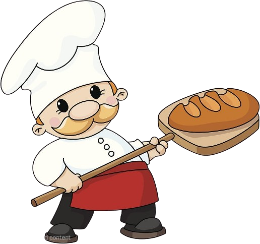

De la casa
De la casa
Panadería y Pastelería El Tradicional
El sabor
de siempre.
Pan recién horneado todos los días, manos pacientes y recetas que saben a hogar.
Recién salido del horno
Pan redondo · Sale a las 17:00
Pan redondo · Sale a las 17:00
ET
Panadería y Pastelería El Tradicional
Hecho tradicionalmenteLa vitrina
Algo rico
te espera.
Todo empieza con harina, agua y tiempo. Elige tu favorito, haz tu pedido y pasa a buscarlo calentito.
De la casa
 Recién hecho
Recién hechoPanes especiales
Pan de chocolate
Pan suave con un toque de chocolate para disfrutarlo recién hecho.
$0.85Pedir
 Dulce de siempre
Dulce de siempre Para llevar
Para llevar Despacio sabe mejor.
Despacio sabe mejor.Nuestra manera
El tiempo es
nuestro ingrediente.
No hacemos pan rapido. Hacemos pan que vale la espera.
Desde que abrimos nuestras puertas, trabajamos con masa madre viva, fermentaciones largas y productores que conocemos por su nombre. Cada madrugada, nuestro equipo llega cuando la ciudad todavia duerme.
01
Masa madre viva
Un cultivo que cuidamos todos los dias y que da sabor real.
02
Fermentacion natural
Tiempo, temperatura y paciencia para una miga inolvidable.
03
Ingredientes locales
Elegimos origen, estacionalidad y relaciones honestas.
Ven a vernos
Donde el pan
se encuentra.
01 Abierto hoy
Tena
Audio-PhoneComputerCalle Eloy Alfaro y Gabriel Espinosa, esquina
Tena, Ecuador
- Lun — Vie
- 08:00 — 20:00
- Sab — Dom
- 09:00 — 21:00
El mapa no pudo cargarse. Usa el enlace para abrir la ubicación.
Ver en el mapa